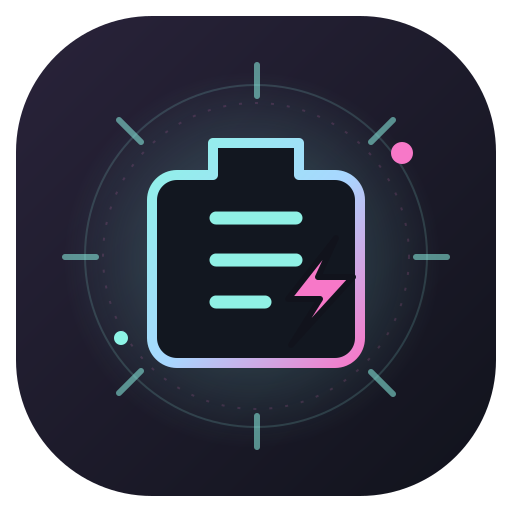

◉ 电池健康度 系统数据
--%
等待系统容量数据
健康度 = 满充容量 ÷ 设计容量

电池星巡01 BATTERY SIGNAL / 实时状态
正在连接设备
正在读取系统开放的电池信息……
YOUR BATTERY, DECODED
等待系统容量数据
健康度 = 满充容量 ÷ 设计容量
完整充电后可用的容量
电池出厂时的额定容量
完整循环一次约等于累计用完 100% 电量
FIELD GUIDE / 03
用满充容量除以电池设计容量估算；它和屏幕上的当前电量不是一回事。
Windows 电池报告会提供设计容量和最近满充容量，设备固件与系统报告可能有误差。
不同设备、系统版本和厂商提供的数据不同。温度仅在来源可靠时才会显示。
CARE / 04
热量才是电池的头号对手。
打游戏时记得给设备散散热。
OPTIONAL / LOCAL ONLY
如果系统或厂商设置显示了容量，可以手动记录并估算。手填结果会标记为“手动估算”，不会冒充系统读数。
Android 公共应用接口通常只提供充电状态与当前电量，并不通用开放电池健康度、满充容量、循环次数或温度。即使应用能读当前电量，也不代表能读出电池健康度。
可先查看手机自带的设置 → 电池或厂商的设备诊断 / 电池健康页面；有些机型才会显示这些数据。若找不到，属于系统未开放，不是应用坏了。也可以在上方录入厂商给出的容量作手动参考。